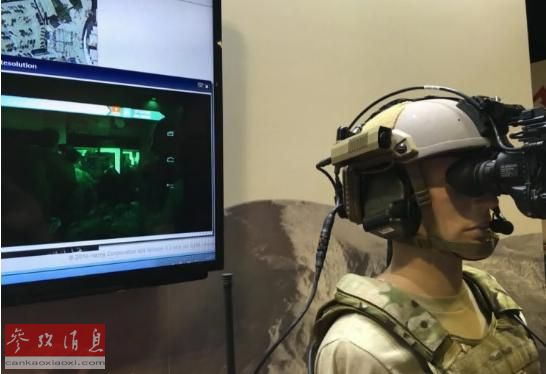

外媒称，在战场交火过程中协调部队调动、通信和空中支援是一件很困难的事情。 然而， 在美国佛罗里达州坦帕举行的特种作战部队装备生产商会议上，10* 65若干企业 推出的新技术或许会有助于减少地面作战混乱中的一些摩擦。
哈里斯公司和应用研究合伙公司将其“增强现实系统”与综合士兵系统一起销售，后者主要卖给外 国客户，美军并不使用。 不过，哈里斯为美军提供无线电设备，包括卫星通信。
虽然该系统大有可为，但装配还存在难题。护目镜、相机和智能手机都会给士兵的装备增加重量， 它们要从车辆搬上搬下并在艰苦的战斗 中一直携带。哈里斯公司的发言人蒂姆·怀特表示，“增强 现实系统”以及配套智能手机和眼镜可能会只配给某些军人，比如也许会在车辆 外或前线后面指挥 的负责人。
 baidu